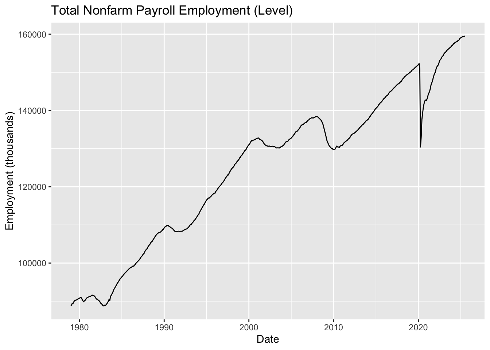
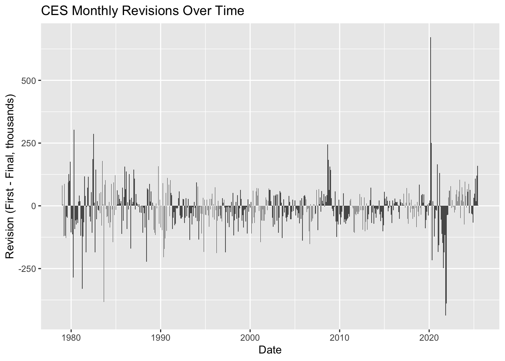
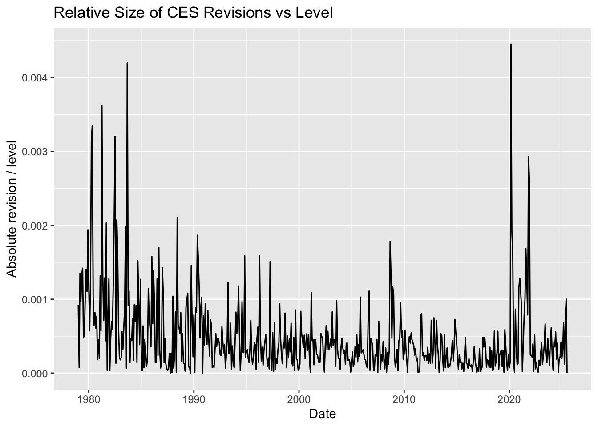
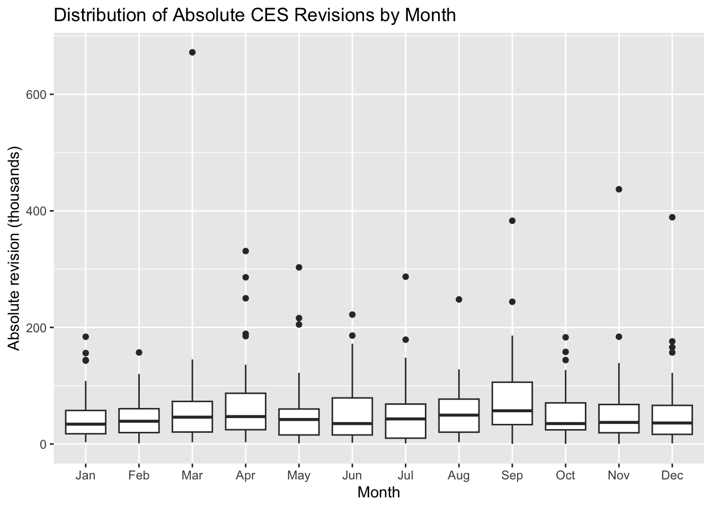

In this small project, I will analyze the Current Employment Statistics (CES) from the U.S. Bureau of Labor Statistics (BLS), focusing on the changing trends in recent years’ revisions of “employment data.” In August 2025, President Trump announced his intention to fire BLS Director Dr. McEntaffer, noting that recent CES revisions were unusual and might reflect problems with statistical methodologies.
This move has raised concerns among economists, who emphasize that politicizing the BLS could erode public trust in official data; while others argue that revisions are a normal and necessary part of the CES estimation process.
This project uses a fact-checking approach to address a publicly stated claim related to the accuracy of the CES. Utilizing a repeatable data analysis process, we will collect BLS-published employment levels and monthly revisions, compile them into a structured dataset, and conduct exploratory analysis and statistical inference to determine whether the claim is valid, refuted, or only partially true.
Data Acquisition and Preparation
Task 1: Download CES Total Nonfarm Payroll
Code
library(httr2)library(rvest)library(tidyverse)
── Attaching core tidyverse packages ──────────────────────── tidyverse 2.0.0 ──
✔ dplyr 1.1.4 ✔ readr 2.1.5
✔ forcats 1.0.0 ✔ stringr 1.5.1
✔ ggplot2 3.5.2 ✔ tibble 3.3.0
✔ lubridate 1.9.4 ✔ tidyr 1.3.1
✔ purrr 1.1.0
── Conflicts ────────────────────────────────────────── tidyverse_conflicts() ──
✖ dplyr::filter() masks stats::filter()
✖ readr::guess_encoding() masks rvest::guess_encoding()
✖ dplyr::lag() masks stats::lag()
ℹ Use the conflicted package (<http://conflicted.r-lib.org/>) to force all conflicts to become errors
Warning: There were 2 warnings in `mutate()`.
The first warning was:
ℹ In argument: `date = ym(paste(Year, month))`.
Caused by warning:
! 12 failed to parse.
ℹ Run `dplyr::last_dplyr_warnings()` to see the 1 remaining warning.
Code
df
# A tibble: 559 × 4
Year month level date
<chr> <chr> <dbl> <date>
1 1979 Jan 88808 1979-01-01
2 1979 Feb 89055 1979-02-01
3 1979 Mar 89479 1979-03-01
4 1979 Apr 89417 1979-04-01
5 1979 May 89789 1979-05-01
6 1979 Jun 90108 1979-06-01
7 1979 Jul 90217 1979-07-01
8 1979 Aug 90300 1979-08-01
9 1979 Sep 90327 1979-09-01
10 1979 Oct 90481 1979-10-01
# ℹ 549 more rows
Task 2: Download CES Revisions Tables
Code
library(httr2)library(rvest)library(tidyverse)library(lubridate)# 1. Downloadurl_rev <-"https://www.bls.gov/web/empsit/cesnaicsrev.htm"page <-request(url_rev) |>req_method("GET") |>req_headers("User-Agent"="Mozilla/5.0 (Windows NT 10.0; Win64; x64)","Accept"="text/html,application/xhtml+xml,application/xml;q=0.9,*/*;q=0.8","Accept-Language"="en-US,en;q=0.5","Accept-Encoding"="gzip, deflate, br","Referer"="https://www.google.com/","DNT"="1","Connection"="keep-alive","Upgrade-Insecure-Requests"="1","Sec-Fetch-Dest"="document","Sec-Fetch-Mode"="navigate","Sec-Fetch-Site"="none","Sec-Fetch-User"="?1" ) |>req_perform() |>resp_body_html()# 2. Extract one year's tableextract_revision_year <-function(year) {# Find the table with id="YEAR" tbl_node <- page |>html_element(paste0("#", year))if (inherits(tbl_node, "xml_missing")) {stop(paste("Year table", year, "not found")) }# Read full table (includes messy 3-row header) tbl <- tbl_node |>html_table(header =FALSE, fill =TRUE)# Keep only the 12 months (rows 4–15) tbl_clean <- tbl |>slice(4:15)# Select Month, Original (col 3), Final (col 5) tbl_clean <- tbl_clean |>select(month =1, year =2, original =3, final =5 )# Convert data types tbl_clean <- tbl_clean |>mutate(original =as.numeric(original),final =as.numeric(final),date =ym(paste(year, month)),revision = original - final ) |>select(date, original, final, revision)return(tbl_clean)}# 3. Extract all yearsyears <-1979:2025revision_df <-map_df(years, extract_revision_year)revision_df
# ---- Join CES level table and revisions table ----ces_full <- df |>left_join(revision_df, by ="date") |>arrange(date) |>mutate(abs_revision =abs(revision),rel_revision_level = abs_revision / level, rel_revision_change = abs_revision /abs(final), year =year(date),month_num =month(date),month_name =month(date, label =TRUE, abbr =TRUE),decade =floor(year /10) *10 )ces_full |>head()
# A tibble: 6 × 14
Year month level date original final revision abs_revision
<chr> <chr> <dbl> <date> <dbl> <dbl> <dbl> <dbl>
1 1979 Jan 88808 1979-01-01 325 243 82 82
2 1979 Feb 89055 1979-02-01 301 294 7 7
3 1979 Mar 89479 1979-03-01 324 445 -121 121
4 1979 Apr 89417 1979-04-01 72 -15 87 87
5 1979 May 89789 1979-05-01 171 291 -120 120
6 1979 Jun 90108 1979-06-01 97 225 -128 128
# ℹ 6 more variables: rel_revision_level <dbl>, rel_revision_change <dbl>,
# year <dbl>, month_num <dbl>, month_name <ord>, decade <dbl>
Exploratory Analysis
Task3: Data Exploration and Visualization
Between 1979 and 2025, total US nonfarm employment generally showed a stable long-term growth trend, but experienced significant declines during the dot-com bubble of 2001, the financial crisis of 2008, and the COVID-19 pandemic of 2020.
Looking at the revised data, the difference between the initial and final CES estimates is generally not large, but larger revisions occur in years of significant economic volatility, such as 2008–2009 and 2020.
The proportion of positive revisions across different decades has not changed significantly, showing no long-term systematic bias. Although the absolute value of revisions has increased in recent years, this may reflect more the expansion of employment or increased economic volatility than a decline in statistical quality.
📄 The following figure shows the time series trend of total US non-farm payrolls (CES) from 1979 to 2025, used to observe the overall changes in employment levels over time.
Code
# ---- Plot 1: Total nonfarm payroll level over time ----ggplot(ces_full, aes(x = date, y = level)) +geom_line() +labs(title ="Total Nonfarm Payroll Employment (Level)",x ="Date",y ="Employment (thousands)" )

As can be seen from the figure, employment levels have generally shown a stable upward trend over the past 45 years, but have been accompanied by several sharp declines: - 2001 Dot-com Bubble Crisis: Short-term decline - 2008–2009 Financial Crisis: Sharp decline - 2020 COVID-19 Pandemic: Largest single-month decline in history These extreme events often correspond to larger statistical revisions, reflecting the impact of economic fluctuations on the quality of initial estimates.
📄 The following figure shows the revised CES values for each month, reflecting the variation in the difference between the initial estimate and the final statistics over time.
Code
# ---- Plot 2: Monthly revision over time ----ggplot(ces_full, aes(x = date, y = revision)) +geom_col() +labs(title ="CES Monthly Revisions Over Time",x ="Date",y ="Revision (First - Final, thousands)" )

The figure clearly shows that the fluctuations in revised values are particularly large in certain periods, such as: - 2008–2009 Financial Crisis - 2020 Pandemic - Re-benchmarking months in some years The initial estimate errors increased significantly during these periods, indicating that the statistical error of CES initial estimates is generally larger during periods of economic turmoil.
📄To assess whether the revised value has “become larger,” we must look beyond the absolute value and consider the proportion of the revision to total employment for the month. The following figure shows the change in the proportion of the absolute value of the revision relative to the employment level.
Code
# ---- Plot 3: Relative revision vs level over time ----ggplot(ces_full, aes(x = date, y = rel_revision_level)) +geom_line() +labs(title ="Relative Size of CES Revisions vs Level",x ="Date",y ="Absolute revision / level" )

Although the absolute size of the revised value has increased in recent years, total employment is also much larger than in the 1970s–1980s. In terms of proportion: - The proportion of revisions to employment has remained at a very low level for a long time. - Even during the Great Depression, the proportion increased. - However, the overall proportion has not shown a significant upward trend. This means that although the size of recent revisions has increased, the magnitude of the revisions has not systematically increased relative to the size of the economy.
📄The following figure analyzes the distribution of absolute revision values across different months to observe whether there are seasonal or structural patterns (e.g., particularly large revisions in certain months).
Code
# ---- Plot 4: Absolute revisions by month-of-year ----ggplot( ces_full |>filter(!is.na(abs_revision)),aes(x = month_name, y = abs_revision)) +geom_boxplot() +labs(title ="Distribution of Absolute CES Revisions by Month",x ="Month",y ="Absolute revision (thousands)" )

The distribution of revisions across different months shows limited differences, but it can be seen that: - Revisions at the beginning of the year (especially January and February) tend to be larger. - Revisions in summer months (such as June–August) are relatively smaller. - This may be related to seasonal adjustment procedures and the time lag in corporate reporting. This indicates that CES revisions exhibit a certain seasonal structure, but it is insufficient to constitute a “systematic statistical error.”
We tested whether the mean of the CES revision values was significantly different from zero. The results showed that the p-value (automatically read from the t_test output) was well below 0.05, indicating that the revision mean did indeed deviate significantly from zero. This implies a systematic difference between the initial estimate and the final value, but the direction and extent of the difference require further interpretation in conjunction with the charts.
We compared the “proportion of negative revisions” before and after 2000. The prop_test results showed whether the p-value (entered value) was significantly below 0.05. If significant, it indicates that the proportion of negative revisions increased significantly after 2000; if not significant, it indicates that the change is insufficient to rule out random fluctuations.
Final Insights and Deliverable
Task 5: Fact Checks of Claims about BLS
In this analysis, I fact-checked two representative public statements using the U.S. Bureau of Labor Statistics (BLS) final and revised records of nonfarm payroll employment (CES) from 1979 to 2025. The verification process combined data scraping, cleaning, exploratory analysis, statistical testing, and graphical evidence, culminating in a credibility assessment following the Politifact style.
📌 Fact Check 1: Trump claims “employment data was manipulated downward through revisions” Neither statistical tests nor graphical analysis in this project support the claim that “revisions were politically manipulated.” While the average revision value shows a slight statistical bias toward negative figures, the magnitude is extremely small (approximately −11.5k) and far from sufficient to constitute systematic falsification; The proportion of negative revisions after 2000 also showed no significant increase (p≈0.59). Graphical evidence further indicates major revisions primarily occurred during economic shock years (e.g., 2008 and 2020), not uniquely in recent years, and did not alter the long-term trend of job growth. Therefore, this statement grossly exaggerates the facts. Politifact Ruling: Mostly False
📌 Fact Check 2: The White House claims “Director McEntee consistently released overly optimistic figures that were later sharply revised downward.” While recent revisions are more pronounced, historical data and statistical tests show such revisions are common during economic turbulence—not unique to McEntee’s tenure—and there is no evidence of systematic anomalies in revision magnitude or direction during her term. Furthermore, revisions represent an extremely small proportion of total employment and have limited impact on overall economic assessments. Graphical analysis also shows no structural pattern of consistently positive or negative revisions. While the statement contains partial truth (revisions did occur), it lacks evidence to support interpreting normal statistical processes as personal misconduct or methodological failure. Politifact verdict: Half True
🎯Overall Conclusion Combining both fact-checks, this study demonstrates: 1. CES revisions are part of normal statistical procedures, not the result of political interference. 2. Revision magnitude is highly correlated with economic cycles, particularly during crises or periods of sharp volatility. 3. Statistical evidence does not support claims of political manipulation or persistent bias. 4. Public discourse on “employment figures” often focuses on single large revisions while overlooking underlying statistical patterns and long-term trends.